ORUS is an all-day portal out of routine and into connection — part café & workspace, part sundowner lounge, part pre-drinks den. One dark, warm room that re-lights itself for the hour: a shared platform where people cross paths, lower their guard and become part of US.
Step through alone or arrive together. ORUS makes space for the first hello, the table that grows, and the night that lasts a little longer — grounded in honest value and real connection. Why choose OR when you can choose US?
00
The Third Space
Not home. Not work. A portal to US.
First place
Home
where you rest.
Second place
Work
where you perform.
Third place
ORUS
where you belong — a portal into connection, open all day.
All-dayOne room evolves with the hour.
Open to allPremium hospitality without the gatekeeping.
Connection by designA shared platform where strangers become US.
One platform, three modes.
08:00 — 16:00 · Day
Café & Workspace
Focus, settle in, feel held.
Cozy foodWi-Fi + powerDeep-work calm
16:00 — 19:00 · Golden Hour
Sundowner Lounge
Close the laptop. Open the evening.
Spritz & low-ABVSmall platesBridge to night
19:00 — Late · Night
Pre-Drinks Den
Easy pours. Real connection.
Fast, easy poursOR / US connectionPre-club warm-up
01
Core Values — O.R.U.S.
The name is the manifesto. Read down the letters and you get the four things ORUS exists to do: Open · Relate · Unplug · Stay. Every decision — the dark room, the single beam of light, the stone coasters, the wet-market pricing — serves one of these.
Open
No velvet rope, no posturing, no algorithm deciding who belongs. The door is open to the CBD suit and the weekend wanderer alike, and so is the room — honest, unfiltered, a little raw. "Open" is also a release valve: we're the place you go offline, drop the performance, and finally exhale.
Open door · open people · phones down
Relate
The whole point is the person across the coaster. ORUS is engineered for real connection — the accidental conversation, the flirty "OR… / …US" wingman line, the table that grows by one. In a city talking through screens, we make it easy to relate face to face, unknown to known.
Why choose OR · when you can choose US
Unplug
Here's the joke, and we're committing to it: the back wall is a grid of power sockets — and the one thing you switch off is you. Flick the group chat to OFF, dock the phone in the wall, and the only notifications left are a fresh round landing and someone new pulling up a stool. The most radical move these days is being fully, unapologetically here.
Flip yourself to OFF · fully here
Stay
"Go home early, or stay out late?" Down here the answer is always stay. One more pour, one more song, one more story — the cave is built to keep you a little longer than you planned. Stay close, stay late, stay part of US.
One more pour · stay a while
The Open Name — What's Your ORUS?
A blank everyone gets to fill. Open · Relate · Unplug · Stay is our answer — not the only one. Every guest, every regular, every season writes their own.
O
your word
R
your word
U
your word
S
your word
Old Roommates, Unusually Sentimental
One Round, Usually Stays
Our Regulars, Unusually Sincere
Open Room, United by Spirits
Ordinary Rituals, Unforgettable Stories
02
Color Palette
A near-black cave interior, grounded in raw ore and concrete. What we own isn't a colour, it's a pairing in the dark: one molten-ore ember breaking through, answered by a cool vein of oxidised copper. The darkness makes the room intimate; the warm ember makes it romantic; the verdigris keeps it mineral and un-generic — not the soft "sleep-amber" glow every wellness brand reaches for.
Primary
Cave Black
#0E0E0D
A deep, matte near-black — the dark, intimate interior of the cave. It signals depth, mystery and permanence, pulling guests away from the bright, plastic surface of the city and down into something grounded.
Secondary
Raw Stone
#9C958A
A warm, dusty grey — raw rock and stone coasters. Tactile and honest, it humanises the black and reinforces the "raw nature" half of the brand without feeling cold or corporate.
Neutral
Bone
#EDE7DB
A soft, warm off-white for type and breathing room. Honest rather than clinical, it carries the widely-spaced wordmark cleanly against the dark and keeps the "high design" half polished.
Accent · Ember
Molten Ore
#CF3E17
The light piercing the darkness — molten rock at the cave mouth. Deliberately deeper and redder than the trendy terracotta / "sleep-amber" orange every bar and wellness brand now uses, so it reads as lava and earned metal, not a soft glow. Kept to a single beam, never a flood — what we own is the contrast, always tied to the rough-hewn 'O'.
Accent · Earth
Oxide Vein
#7A3B2E
An oxidised, mineral red-brown — the precious vein running through the ore. It grounds the ember, adds maturity and ruggedness, and ties the identity back to earth and hidden treasure.
Signature · Cool
Verdigris
#4C8C7A
Oxidised copper — the cool patina metal earns with age. This is the differentiator: near-black + ember is warm and expected, but pairing it with a mineral teal-green is a combination a soft, bright wellness brand structurally can't follow. Used sparingly — a rim of light, a line, a stamp — it makes the palette unmistakably ours.
Flash · Signal
Sulphur
#F1C40E
Raw mineral yellow — the sulphur streak in the ore, and the brand's loud after-dark voice. This is the only high-key colour in the system, held off the interior and reserved for event posters, social and promo: blacked-out type on a full sulphur field, cut with the molten ember (see Section 06). It gives the nightlife side of ORUS a jolt of energy the calm cave never shows — the flash of the flyer, not the light of the room.
Usage ratio (interior & core): ~70% Cave Black · ~15% Raw Stone & Bone · ~8% Oxide Vein · ~4% Molten Ore · ~3% Verdigris. The ember is a single beam and verdigris a thin cool vein — never flood the room with either. The signature is the warm-vs-cool tension in the dark, not any one hue. Sulphur sits outside this ratio — it is a promo-only flash (posters, social, event graphics), never used on the space, menu or core identity.
cave / ore wall
oxide vein
dawn light
raw stone
verdigris patina
molten glow
03
Logo & Brand Motif
The mark is entering its next refinement stage. Below are 8 logo options — listed at the same scale so you can compare and pick one as the primary. Includes clean type wordmarks, custom refined marks, the current raw hand-hewn mark, and the Cave-Mouth Ring icon+wordmark.
01
Logo Options — Choose One
Same card size, same hierarchy: option number · mark · name · one-line read. Pick one.
Option 01
ORUS
Wide Light
Airy, spa-luxe wordmark (Manrope 300).
Option 02
ORUS
Geometric Display
Circular, fashion-forward (Unbounded).
Option 03
ORUS
High-Contrast Serif
Editorial, lifestyle (Cormorant).
Option 04
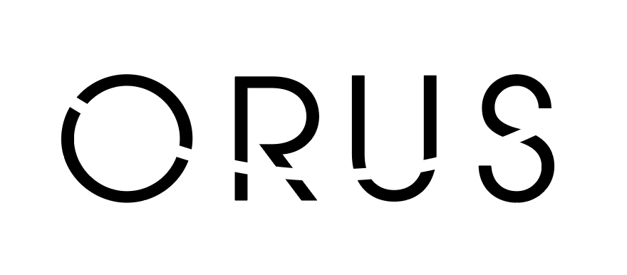
The Stencil Mark
One hidden circle cuts through every letter.
Option 05
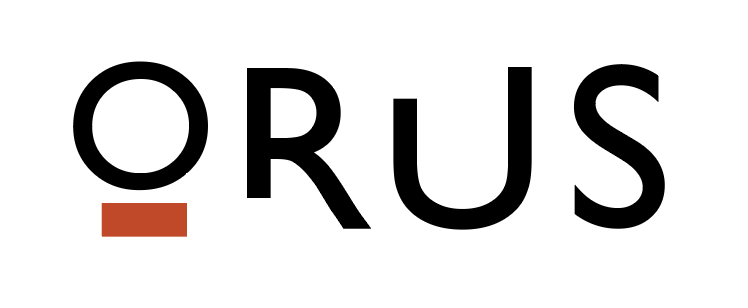
The Pin Mark
Rounded grotesque + molten bar under the O.
Option 06
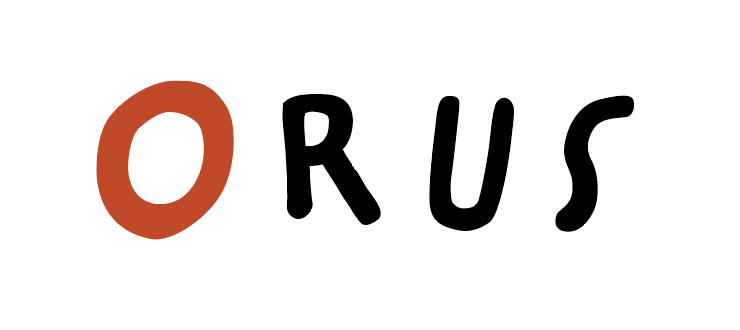
The Marker Mark
Hand-drawn letters with a molten O.
Option 07
Raw Contrast Mark
Fully hand-hewn ORUS + molten spark.
Option 08
Cave-Mouth Ring
Icon + wordmark — imperfect ring, dawn spark.
Choose one of Options 01–08 as the primary ORUS logo. The Seal (below) stays the secondary motif — not a logo option.
Anatomy — Options 04–06 · Refined Custom Marks
Closer look at the three custom-drawn directions — annotated for decision detail.
Option 04
The Stencil Mark
Built on one hidden circle — a single ring threads through and cuts every letter, connecting O·R·U·S invisibly. That unseen link is our hospitality: everyone in the same circle.
Option 05
The Pin Mark
A bold rounded grotesque anchored by a molten bar beneath the 'O' — a warm "you-are-here" signature.
Option 06
The Marker Mark
Loose, hand-drawn letters with a single molten 'O' — the warmest, most human and playful route, and the natural bridge to the raw mark.
Anatomy — Option 07 · Raw Contrast Mark
The current raw hand-hewn wordmark — fully in the choice set as Option 07.
Option 07 · Contrast Wordmark
The Raw Contrast Mark
Read as one word — ORUS, never split. Every letter is rough-hewn, wobbly, and organic — carved as if pulled straight from raw stone. The whole wordmark shares one hand-made texture, grounded by the geometric structure beneath and accented by a single molten spark.
Anatomy & Symbolism
Design Process
1 · Set clean wordmark
›
2 · Hew every letter
›
3 · Add molten spark
Option 07 · Colour Applications
Primary · fully hand-hewn ORUS
Reversed · on bone / light apparel
Anatomy — Option 08 · Cave-Mouth Ring
Icon + wordmark — fully in the choice set as Option 08. A raw, hand-made form that still reads back to ORUS.
Option 08 · Icon + Wordmark
Cave-Mouth Ring
A single wobbly, hand-drawn ring — the imperfect 'O', the mouth of the cave — with a molten dot breaking on the rim like dawn. The most ownable standalone icon: works as an app avatar, a stamp, a charm. Rooted in marks like Club Soft and RG.
Anatomy & Symbolism
Design Process
1 · Draw the circle
›
2 · Wobble the ring
›
3 · Break dawn
Raw, Done Right — Rugged Can Read Premium
A quick reality check before we sand ORUS smooth. Ultra-minimal, geometric marks can end up feeling generic and a little cold — less lifestyle. The most characterful hospitality brands prove the opposite: a hand-made, rugged mark, executed with considered materials, warmth and light, reads expensive, human and unmistakably its own. This is the argument for keeping ORUS's raw, hand-hewn wordmark as the hero rather than over-refining it.
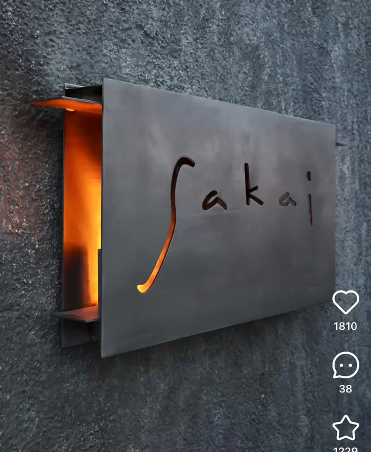
sakai · hand-scrawled cut-out lettering on raw steel, backlit with an ember glow against concrete — essentially the ORUS palette: cave black · molten ember · raw stone.
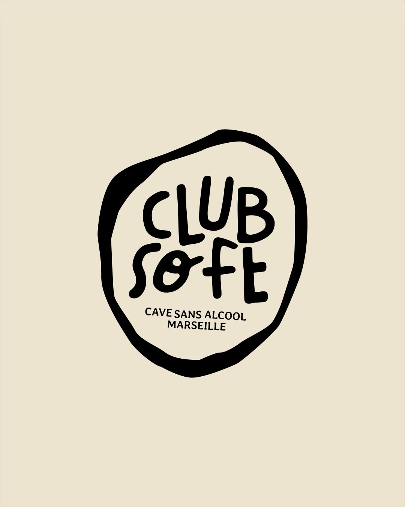
Club Soft · a wobbly, hand-drawn cave ring around hand-lettering (Marseille) — imperfect, warm, instantly ownable.
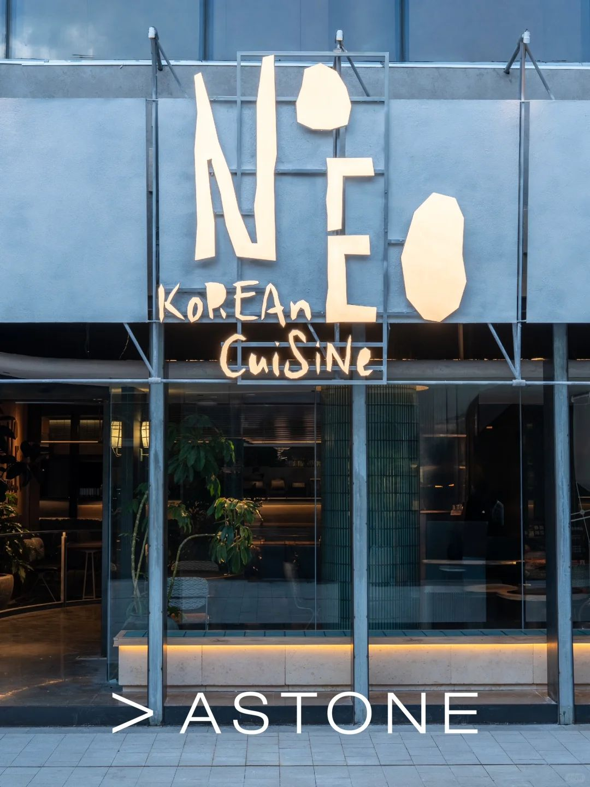
NEO · rough, rock-cut lettering fronting an upscale restaurant — raw type, premium setting.
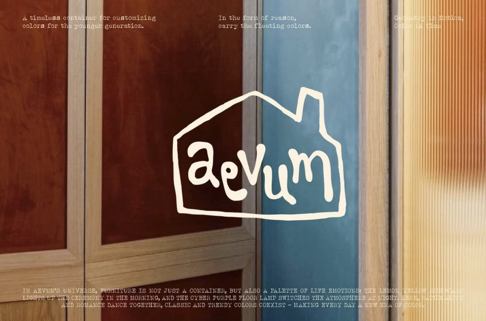
aevum · a loose, hand-drawn mark over rich wood and warm colour — editorial and high-end, not childish.
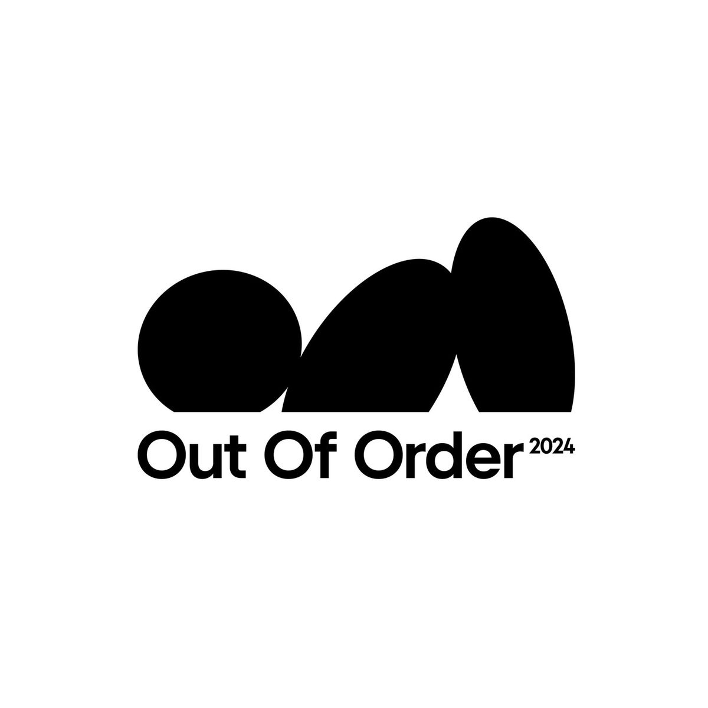
Out Of Order · organic ore-blob letterforms, cleanly executed — rugged silhouette, premium finish.
Takeaway — the goal isn't clean vs. raw — it's raw, done with intent. Keep the texture; control the materials, spacing and light around it. That's where rugged becomes premium.
C
Motif — The Seal
Not a logo option — the secondary brand motif that lives alongside whichever wordmark is chosen. One motif, several skins.
Motif · Ink-Seal Stamp
The Seal
A refined, geometric take on the traditional hanko stamp: a clean ore-stone with a soft aperture, grounded by a bar. Made for physical texture: apparel, cap patches, coasters, napkins and door seals.
Anatomy & Symbolism
Design Process
1 · Cut the seal
›
2 · Set ore + aperture
›
3 · Ground & grain
Motif Renditions — The Seal
One motif, six skins — the same clean ore-stone seal holds up across warm, tonal, single-ink, cool-patina and loud promo treatments. The Tonal · oxide rendition is the more stylised, softer version; the Verdigris stamp is where the palette's cool signature earns its place on the mark (coasters, cap patches, door seals); and the Sulphur stamp is the high-key version reserved for event & social — never the interior.
Motif · PrimaryBone on molten
Motif · TonalOxide on molten (stylised)
Motif · KnockoutBlack on white
Motif · MonoSingle-ink on paper
Motif · PatinaVerdigris stamp (cool)
Motif · SulphurPromo / event stamp
D
Exploration — The 'O' Icon Studies
Not a logo choice — a record of directions tried while exploring a standalone O for app icon, stamp, coaster and social avatar. Kept here as demonstration of the process: the 'O' as a ring, a cave-mouth, a stone, including the negative-space tile carved out of a solid block.
Exploration · 01
Negative-Space TileThe O carved out of a solid, hand-cut block — a stamp/app-icon.
Exploration · 02
Ember TileSame block in molten ember — the warm, promo / social version.
Exploration · 03
Rough OreA hand-hewn ring with rough rock cuts inside — the most natural, cave-like O.
04
Collateral & Touchpoints
Where the brand meets the space. Every physical touchpoint should feel tactile and deliberate — raw surfaces, deep shadow, one warm accent. Cheap on price, never cheap to the touch. Collateral designs are in progress; the direction below sets the tone.
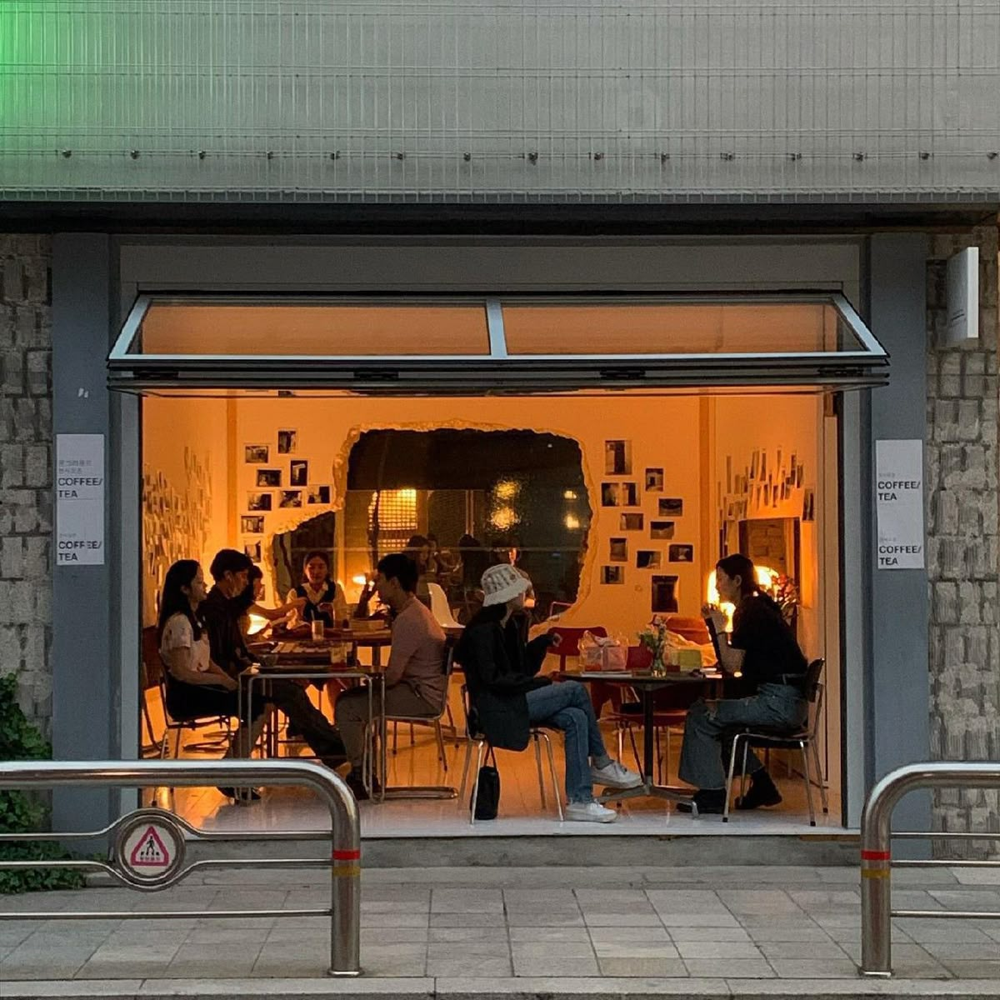
Folded fully open — café spilling to the street
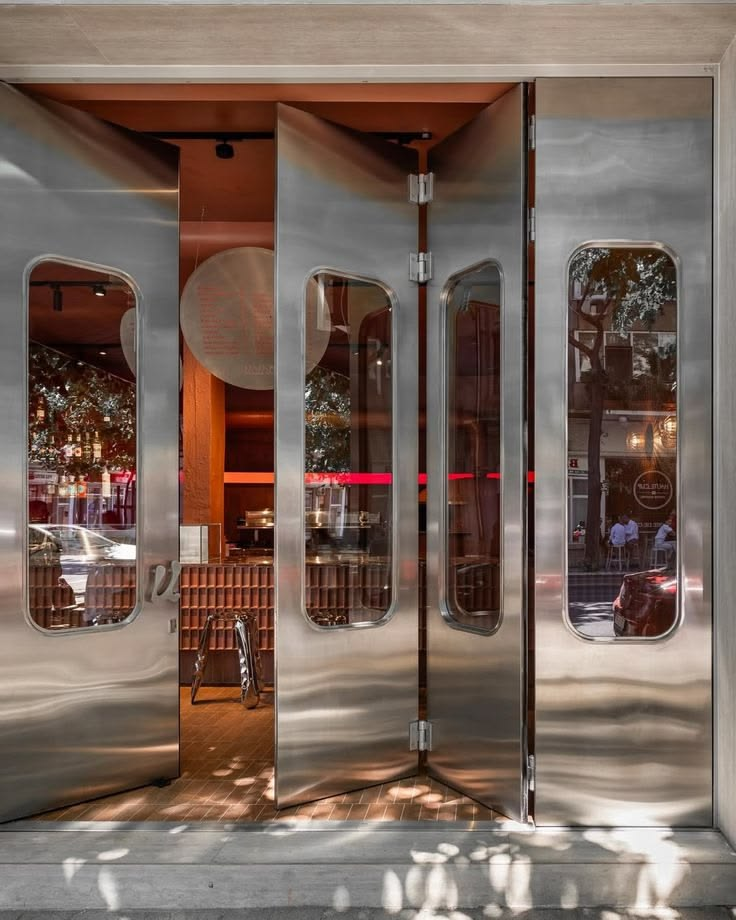
Bi-fold metal + glass panels swing wide (day)
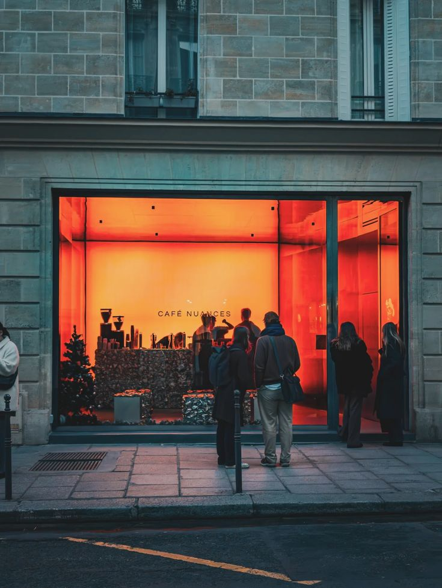
Molten glow — the crowd gathers at the mouth
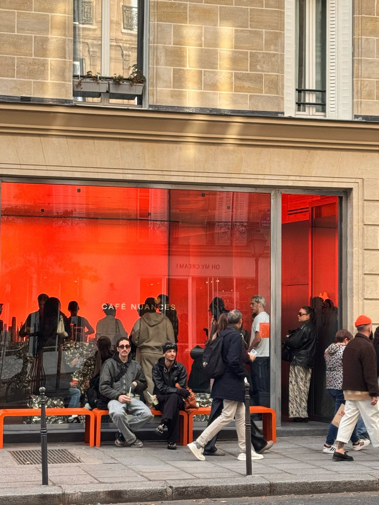
Spillout bench on the five-foot-way
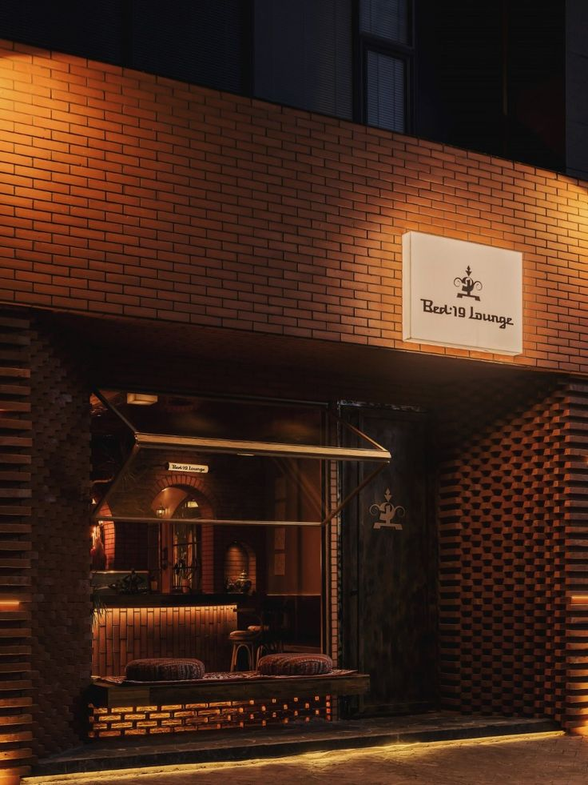
Propped-open awning — kopitiam-open at night
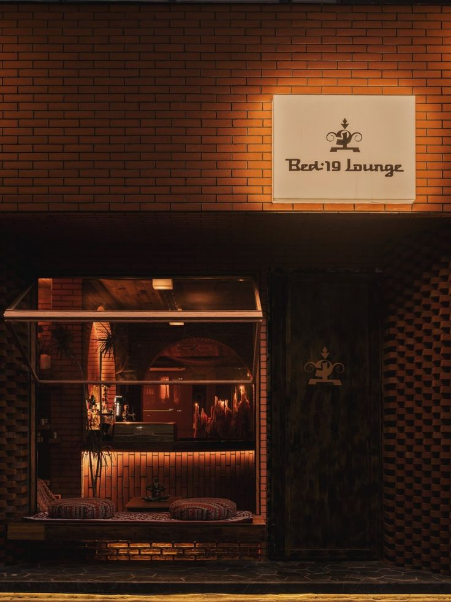
Open window, cushions, low warm light
Facade — Open Frontage
One move, biggest impact. An openable frontage — bi-fold panels or a lift-up awning — that folds away so the room breathes onto the five-foot-way. By day it reads as a bright, welcoming café: counter stools, greenery, spillout seating, kopitiam-open — the clearest possible signal of no velvet rope and the all-day trade. As night falls the same opening becomes the glowing cave mouth, warm ember light spilling onto the pavement and pulling people in. Keep the materials dark, raw and ownable and let openness + warm spill light do all the inviting — never generic white. The references show the range: bi-fold metal-and-glass, lift-up awning windows, and street-side spillout. (SG notes: five-foot-way spillout needs an outdoor-refreshment-area licence; keep an air-curtain / vestibule if running aircon; URA conservation facades cap signage size.)
A secondary, re-skinnable layer that wraps around the hero back bar: a single projector throwing light, film grain and texture across the stone — the cave mouth becomes whatever the night calls for. This keeps the space flexible: seasonal artwork, archival film, slow abstract loops, or a fully custom takeover. It is also the more sustainable choice — no reprints, no waste — and lets the venue be re-skinned instantly for private event buyouts.
Where the Open Name becomes a place. Guests' filled-in "What's your ORUS?" coasters and cards get clipped up alongside polaroids, receipts, ticket stubs and quick snaps — a growing, guest-built archive of what ORUS meant that night.
Free UGC, deeply community-first. Build on the kitchen window / pass (where customers usually stand while queuing for the toilet) — run it on a stainless steel magnetic board or mesh grid + clips so it flips straight into a merch wall for drops — tees, caps and totes on the very same hooks.
Leave us be. Deep talk, a first date going well, or just here to decompress solo.
Molten · On FireHit me up now
Buzzing and open. Come say hi now — singles on the pull, groups happy to merge tables.
Verdigris · OpenSay hello
Open to a hello. Approach gently — a new face is welcome to pull up a stool.
Sulphur · WaitingWarming up
Saving seats. Waiting on someone, or still warming up — check back in a bit.
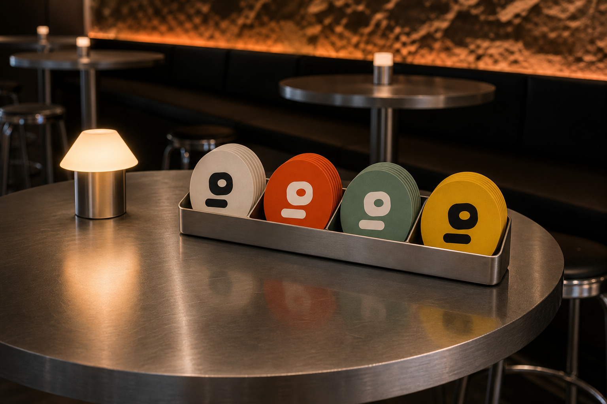
The Status Coaster — Read the Room
A social cue hidden inside our own mark. The seal comes in four colours, and each one signals your vibe for the night. Every table gets the full set in a small stand with a legend card; after you order, you pick the coaster that matches your mood and the server slides it under your glass as they serve — no app, no awkward opener, just a colour. Swap it the moment the night changes. Staff read the whole room at a glance, and singles or groups get a low-stakes way to say come over — or not tonight. It turns the ORUS mark itself into the icebreaker.
Singles & GroupsPick Your SignalServer-Placed on ServeSwap AnytimeBuilt on the Seal
Menu — Drinks v1.0 (Bar Team)
The drink programme is locked — costed and built by the bar team. It leads on value: a house pour and the full ORUS Signature fruit series at a flat $9.90, classic builds at $15.90, ready-to-drink at $19.90, and premium bottles for the table. Below are two menu layouts of the same v1.0 list — a value-forward Market Receipt and a clean, editorial Ore Card — the two faces of accessible luxury.
Drinks · Value on Tap
House Pour$9.90
Whisky Highball
Damiyo Whisky · Soda · Lemon
Umeshu Spritz
Umeshu Whisky · Sparkling Sake / Wine
Vodka Soda
Seara Craft Vodka · Soda · Lime
Gin & Tonic
Okinawa Gin · Tonic · Lime
Calamansi Sour
Damiyo Whisky · Calamansi · Yuzu
Oolong Highball
Damiyo Whisky · Oolong Tea
White Peach Sour
Seara Vodka · White Peach Liqueur · Lemon
Lychee Highball
Lychee Liqueur · Seara Vodka · Soda
ORUS Signature · Fruit Series$9.90
ORUS Peach
Shochu · Peach Purée · Soda
ORUS Passion
Rum · Passion Fruit Purée · Soda
ORUS Pink Guava
Gin · Pink Guava Purée · Soda
ORUS Mango
Shochu · Mango Purée · Soda
Classic Builds$15.90
Paloma
Tequila · Grapefruit · Soda · Salt
Salty Dog
Seara Vodka · Grapefruit · Salt
Gin Rickey
Okinawa Gin · Soda · Lime
Ready to Drink$19.90
Duxton Martini
Umeshu Whisky · Coffee Liqueur · Sweet Vermouth
ORUS Negroni
Okinawa Gin · Campari · Sweet Vermouth
Bottlesfor the table
Kujira Kyojin Whisky
Japanese Single Grain · White Oak · 700ml
$128
Okinawa Gin
Craft Gin · Botanicals & Citrus · 700ml
$138
Cincoro Blanco Tequila
100% Blue Agave · 750ml
$228
Seara Craft Vodka
Small-batch Japanese · 500ml
$108
NET · You keep the change — What's your ORUS?
@orus.sgDuxton · SGorus.sg
MENU
House Pour$9.90
Whisky Highball
Damiyo Whisky · Soda · Lemon
Umeshu Spritz
Umeshu Whisky · Sparkling Sake / Wine
Vodka Soda
Seara Craft Vodka · Soda · Lime
Gin & Tonic
Okinawa Gin · Tonic · Lime
Calamansi Sour
Damiyo Whisky · Calamansi · Yuzu
Oolong Highball
Damiyo Whisky · Oolong Tea
White Peach Sour
Seara Vodka · White Peach Liqueur · Lemon
Lychee Highball
Lychee Liqueur · Seara Vodka · Soda
ORUS Signature · Fruit Series$9.90
ORUS Peach
Shochu · Peach Purée · Soda
ORUS Passion
Rum · Passion Fruit Purée · Soda
ORUS Pink Guava
Gin · Pink Guava Purée · Soda
ORUS Mango
Shochu · Mango Purée · Soda
Classic Builds$15.90
Paloma
Tequila · Grapefruit · Soda · Salt
Salty Dog
Seara Vodka · Grapefruit · Salt
Gin Rickey
Okinawa Gin · Soda · Lime
Ready to Drink$19.90
Duxton Martini
Umeshu Whisky · Coffee Liqueur · Sweet Vermouth
ORUS Negroni
Okinawa Gin · Campari · Sweet Vermouth
Bottlesfor the table
Kujira Kyojin Whisky
Japanese Single Grain · White Oak · 700ml
$128
Okinawa Gin
Craft Gin · Botanicals & Citrus · 700ml
$138
Cincoro Blanco Tequila
100% Blue Agave · 750ml
$228
Seara Craft Vodka
Small-batch Japanese · 500ml
$108
How to read it
Same v1.0 list, two faces. The Market Receipt (bone, mono, dashed rules) prints the flat $9.90 value plainly — honest, loud, relatable. The Ore Card is the clean, editorial twin — inspired by the mono-type reference below: a bold MENU masthead, thin-ruled list, the raw ore-rock mark and the hand-hewn ORUS wordmark signing it off. Its rules are drawn in verdigris — the palette's cool signature quietly threading the page. One shouts value, one whispers craft.
Dressing the list — the v1.0 layouts above are the working menus. The material references and story skins below are optional wrappers the same list can wear (a payslip, a market receipt, a nutrition panel) once the final direction is chosen.
Format & Material References
Photo booklet · show the drink, don't describe it
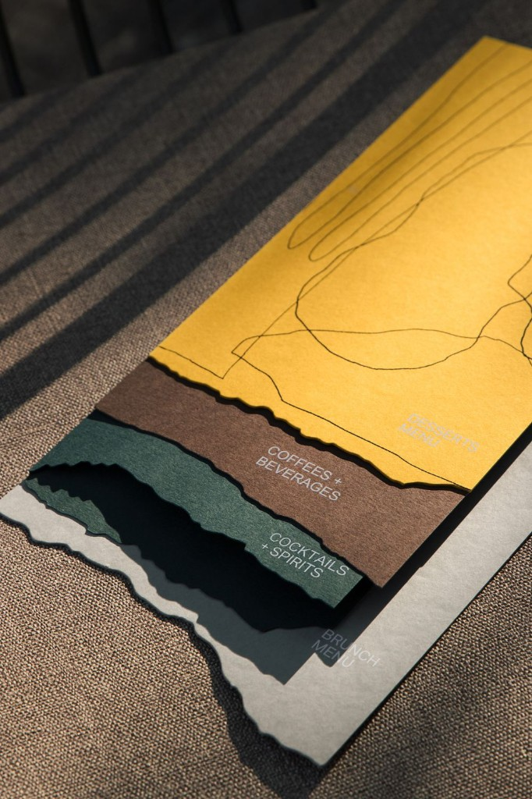
Layered recycled stock · torn edges, colour-coded
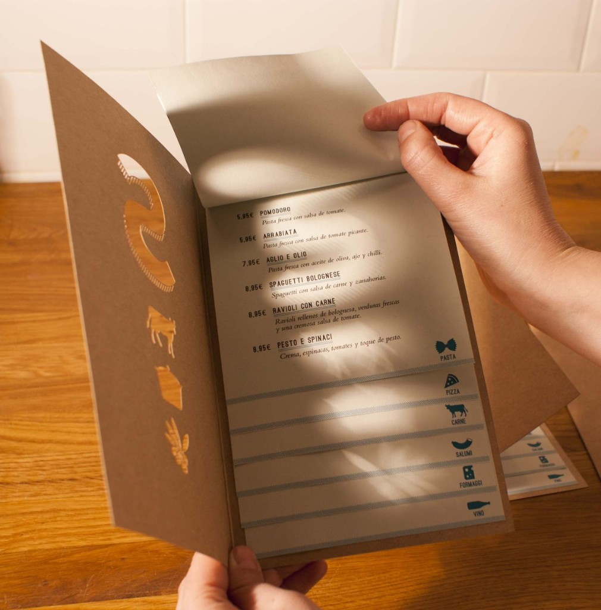
Die-cut icons · kraft fold-outClean mono type · ore-rock mark
CONCEPT 01
The Payslip
The drink list written in the language of office life — the drinks and categories are named after office jargon (e.g. a "KPI", an "AAR", the "Off-in-Lieu"), framed as a salary statement.
Speaks straight to the after-work crowd escaping the grind, with the punchline "NET — you keep the change."
The drinks are built on chilled juices, fruit purées, tomato and matcha — real produce — so the menu reads like a fresh-market receipt.
The drinks and categories are named like just-picked goods (a "Fresh Today", the "Cold-Pressed" section), with bold prices shouting value the way a wet-market stall does. Relatable, honest, Singaporean.
Drink names / categories Ideas: Fresh Today · Cold-Pressed · By the Kilo · Tomato Foam · Best Before Last Call
CONCEPT 03
The Nutrition Panel
Each drink gets its own mock nutrition / ingredients label, riffing on the cold juices, purée highballs, matcha and tomato foam.
The drinks and categories are named after label language (a "100% Fresh Purée", the "% Daily Fun" section), with clean carton typography, servings and a big calorie-style price. Tongue-in-cheek wellness — looks healthy, drinks like a party.
The "Ready to Drink" category on the menu has potential to become a standalone lifestyle product line. We have built out a separate concept presentation focused on a flat glass bottle format — not cans — with cheeky mood-driven naming (like "Hot & Bothered" and "Slow Hands") and the ORUS Seal on the flat face.